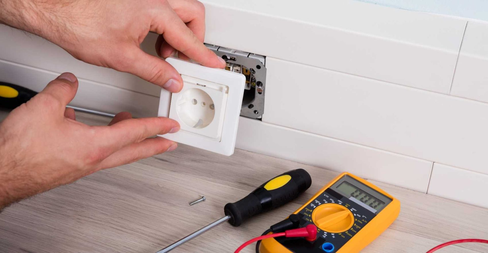
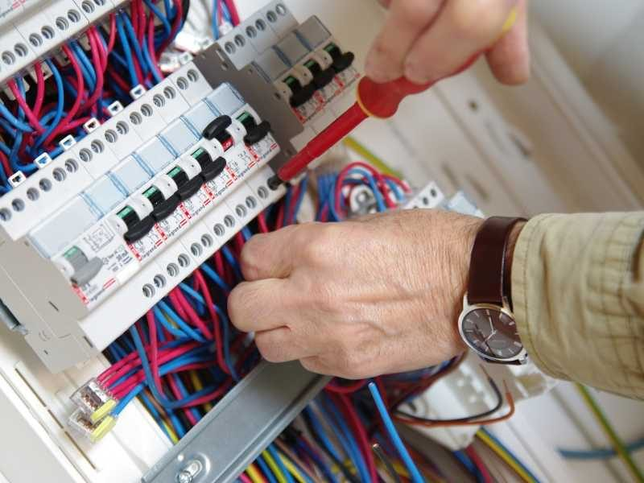
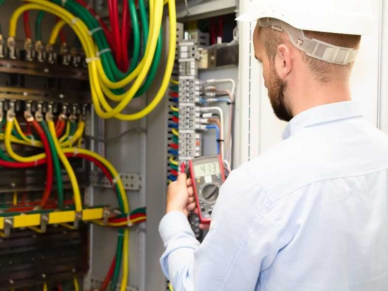
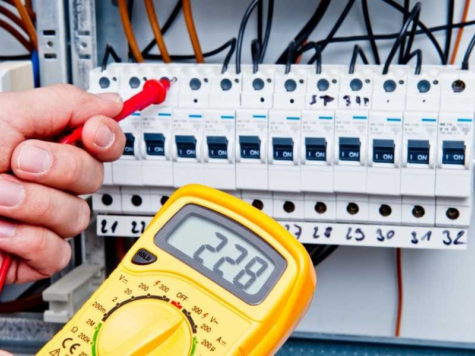
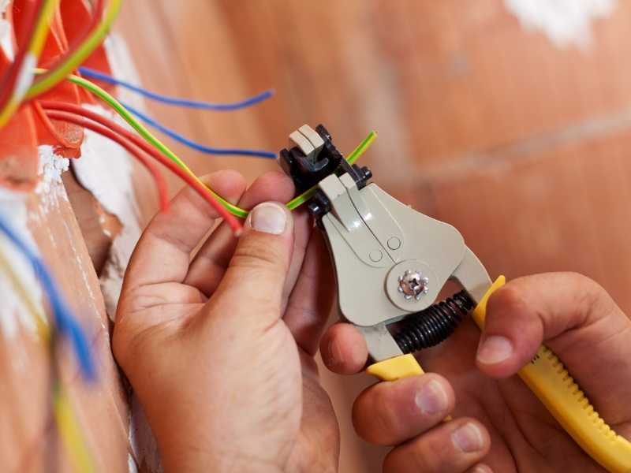

Installation, entretien, maintenance et depannage. Une installation conforme aux normes pour votre securite.
Professionnel et a l'ecoute, notre electricien vous accompagne sur tous vos travaux d'electricite generale : installation, entretien, maintenance et depannage de tableaux electriques, d'interrupteurs, d'eclairage de terrasse et de VMC (simple et double flux), ainsi que la mise aux normes electriques.
Au service des particuliers depuis 1988, l'entreprise prend egalement en charge l'electricite tertiaire et les radiateurs electriques.


Pour ameliorer votre securite et garder un oeil sur votre habitation, SPEC TOBI installe vos systemes de telesurveillance, visiophones, interphones et parlophones.
L'entreprise s'occupe egalement de la motorisation de vos portails et portillons.


Reponse rapide et devis gratuit, sur Nice et tout le bassin azureen.